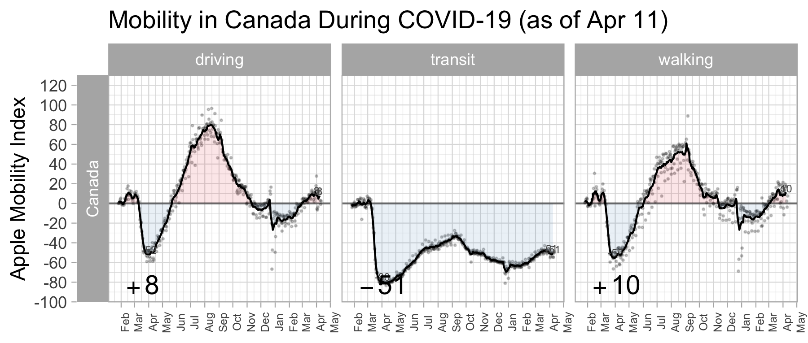
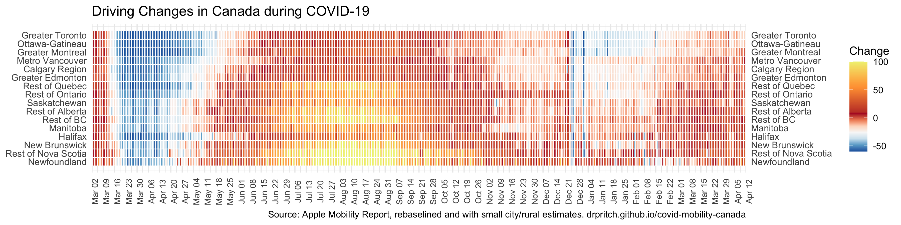

Monitoring COVID-19 & Mobility in Canada
Data last updated June 14, 2020 21:30 EDT
@drpritch2 | github | david pritchard
Intervention: Physical Distancing. Proxy Metric: Mobility Indexes.
Coloured region shows growth/decline from its low point - Mar 30-Apr 5 in most of the country, a week earlier in BC/Ontario/Newfoundland.


From early March to mid-May 2020, Canadians stayed at home and applied physical distancing to defend against COVID-19, to great effect in reducing the caseload.
This dashboard focuses on the most effective publicly available metrics for monitoring physical distancing in Canada.
The most important aspect of mobility monitoring is the tight feedback loop: with the fastest data sources, we can observe mobility trends within 24 hours, and it may prove to be a leading indicator of COVID-19 cases. In order of feedback speed, indicators are: mobility; sewage surveillance and syndromic surveillance; COVID test submissions; positive test results; hospitalizations; deaths. As we progress through the post-lockdown period, however, we must also be aware of the limitations of mobility data: it is only a proxy. Hopefully, with the right behaviours (social distancing, handwashing, masks for all) and the right public health controls (tracing, testing and isolating), mobility can return to normal and the pandemic remain controlled.
Data sources
- Apple Mobility Trends
- Google Community Mobility Reports
- CityMapper Mobility Index
- PiinPoint
- US only: Facebook Mobility Data Network
- US only: Other
- Environics Analytics
- Traffic Counts
- Syndromic Surveillance
Apple Mobility Trends
- website | about data
- Quick updates, data available within 24 hours
- Metropolitan areas, and driving data at the provincial data
- Intention to travel (using maps app), not measure of actual travel. Also likely biased towards "unusual" trips that require directions
- Categorized by mode, excluding bike and taxi
- Use some caution: shifts between modes can create analysis errors. A wholesale shift from driving to walking could appear as a "spike" in walk mode, but no actual increase in total travel activity
- Additional processing done here:
- Rolling seven day average, centred. This smooths out day-to-day noise, and also eliminates day-of-week variation: every datapoint includes five weekdays and two weekend days.
- Rebaselining: the raw data is all relative to Mon., Jan 13, 2020. Friday and weekend travel is quite different from Monday travel, and shows up as part of the fluctuation in the raw data. In the point data on these graphs, the data has been "rebaselined": each Monday is relative to the median activity level for Mondays between Jan. 13 and Feb. 12, and likewise for each other day of the week.


{kind=link}
Google Community Mobility Report
- website | about data
- Regular but lagged updates. Data released on Wednesdays and Saturdays for period up to 5 days prior. This means that on Tuesdays, data is 8 days out-of-date.
- Provincial data, but no municipal data available. Varying rural/urban composition makes province-to-province comparisons difficult.
- Actual travel, measured at the destination location.
- Categorized by destination type/trip purpose. A solid basis for analysis, but not comprehensive and subject to the whims of Google's normal classification process. For example:
- Workplaces presumably omits many classes of work: construction, home cleaning, doctors' house calls, forestry camps, oil sands
- Many activities excluded: socializing with friends, airport travel, hotel visits
- The raw data is already reasonable. The only change in this analysis is a rolling seven-day average, for the same reasons as discussed for Apple data. In Google's published reports, be aware that the "headline" percentage shown for each category refers to travel on the final day of the dataset, a Friday.
CityMapper Mobility Index
- Very similar to Apple's data, but derived from a separate app. Only three Canadian cities covered.
PiinPoint Retail Foot Traffic
- Built on top of SafeGraph data. Currently the only Canadian report I'm aware of that shows retail impacts by sector in this manner.
US only: Facebook Mobility Data Network
- Facebook has excellent data, and has given university researchers access to it to produce great metrics and dashboards... but so far only American groups have taken them up on it.
- Data is only available to university researchers, but can be aggregated for a publicly visible dashboard
US only: Other
- Cuebiq
- Safegraph Shelter in Place and also foot traffic data. Dataset spans both US and Canada, but only US data presented so far.
- Maryland Transportation Institute cell phone data analysis and great visualization in their Findings section
- Foursquare data on retail foot traffic by category, at the US county level, 48 hour lag. No Canadian data at this time.
- Descartes Labs
- Opportunity Insights "Time Outside Home" graphs are a repackaging of Google's data, but very slickly done. The animation between categories is really helpful.
Environics Analytics
- Best geographic detail, best true estimate of "outside of home" behavior.
- Cellphone position tracking outside of home postal code. Covers weekend activity, spanning Feb. 2nd to April 5th.
- Further data is likely available for paying clients. Not clear what analysis time lag is, whether the 5 day lag for Globe and Mail is normal.
- Covered by Globe & Mail, April 10th, "Canadians sticking closer to home amid shutdownm analysis finds".
- Covered by Toronto Star, April 12th, "Which Canadians are best adhering to COVID-19 self-isolation rules? This Environics data provides a snapshot across the country and in your neighbourhood".
- Covered by CTV news
- See also: U. Maryland analysis covering period to April 17 in US states and SafePath data up to April 30, covered by the Washington Post on April 25 and May 7
Traffic Activity
- Sometimes gives access to finer geographic detail, reported in real-time
- Only provided by a few municipalities
- Requires manual geoanalysis, sometimes also website scraping
- City of Calgary traffic incidents
- Ontario Provincial Police GTA Traffic twitter feed
- Ottawa traffic incident API
- Surrey, BC traffic loop data assembled by Jens von Bergmann
Syndromic Surveillance
- Most "leading" indicator of COVID cases, prior to test submissions or results
- covidnearyou.org
- flatten.ca
- Facebook/CMU equivalent, expected to reach Canada shortly.
- ACES Pandemic Tracker: Ontario hospital admissions combined with symptom keywords
References
- Soucy, Sturrock, Berry, Daneman, MacFadden and Brown. Estimating the effect of physical distancing on the COVID-19 pandemic using an urban mobility index, 2020, preprint
- Aktay et al., Google COVID-19 Community Mobility Reports: Anonymization Process Description